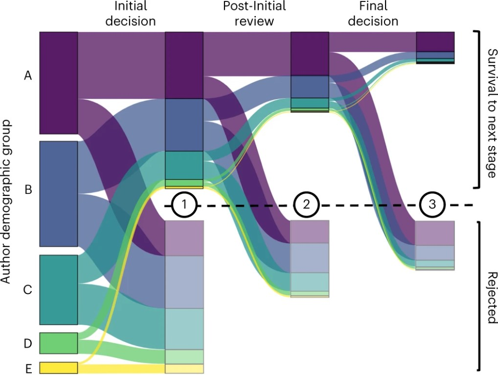
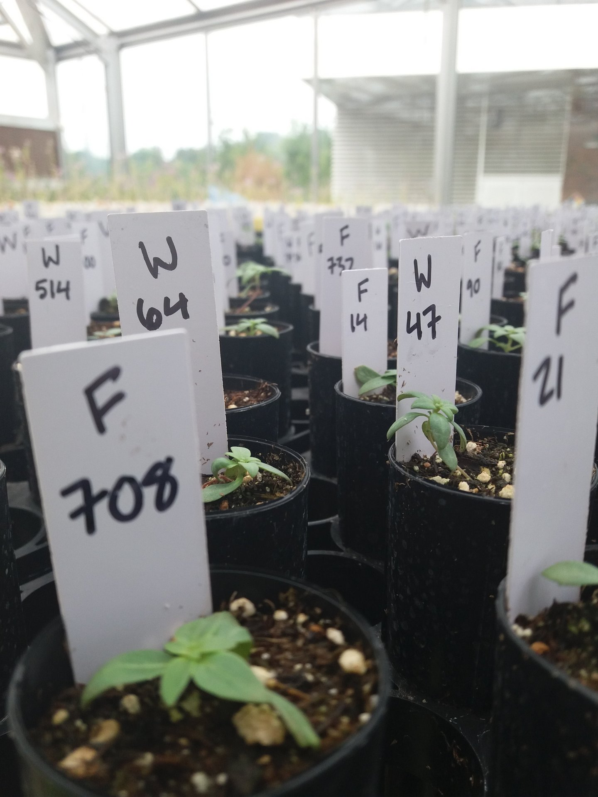

News
I earned two MSU teaching awards!
The first award is an "excellence in teaching" citation given to the top 6 graduate teaching assistants across the university, and the second is the "Fields outstanding teaching assistant" award from the department of plant biology.
Call to expand access to peer review published

Our collaborative meta-analysis group published our second project: a call to action for journal editors to open access to peer review data. You can read our paper here.
Educator of the Month

I was featured as MSU's educator of the month! Click here to check out my profile.
Peer Review Bias Reseach Published
I participated in a collaborative meta-analysis study showing that peer review produces worse outcomes for historically excluded groups in science. Click here to read the whole paper!
Where should they come from, where should they go?

The first chapter of my dissertation was published! We show that sourcing seeds more locally does not increase plant establishment or abundance of 5 commonly-used prairie species. Click here to read the whole paper!
ESA Restoration Poster Contest Winner

I was awarded first place at the Ecological Society of America 2022 Restoration Poster Contest!
Temperature Chambers: assembled!

I finished assembling 9 elevated temperature chambers to test the effects of seed sourcing decisions under simulated climate change! Stay tuned for the results!
Seed Producer Problems
My M.S. thesis was published! I find that after eight years of propagation, cultivated wildflowers differ substantially in several functional traits from the wild populations used to establish the farms. Check out the full paper here!